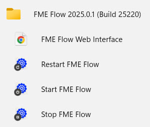
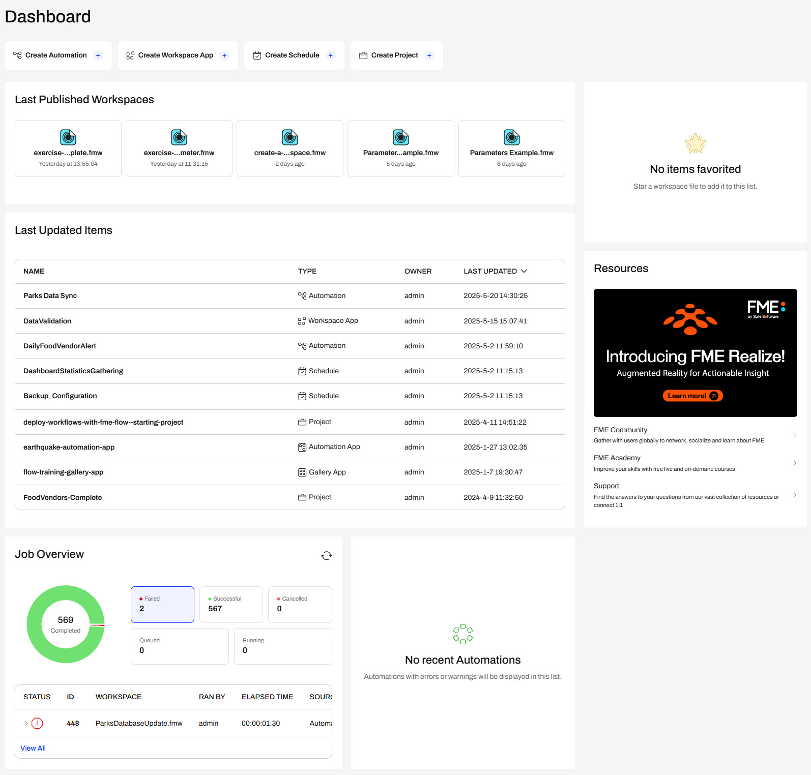
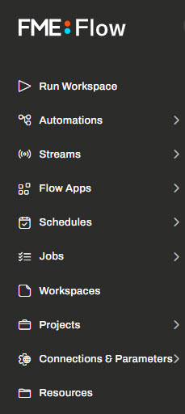
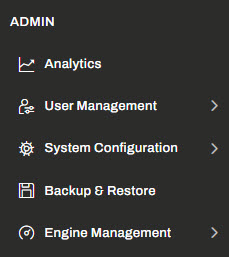
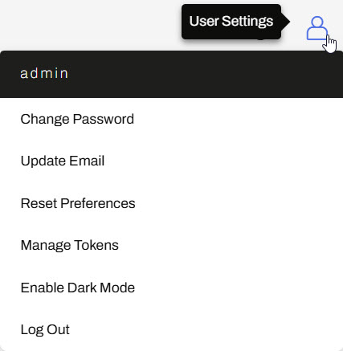

Learning Objectives
After completing this lesson, you’ll be able to:
- Understand the different ways to access FME Flow.
- Understand the main functions of FME Flow.
- Navigate to and log in to FME Flow.
- Understand the FME Flow Dashboard and side menu.

Learning content in the FME Academy presents a user's story addressing their data integration challenges with FME. You should follow along with their actions using your installation of FME (2025.0.1 or later) or request an on-demand virtual machine in the footer link below. Some lessons will require you to follow their steps or take additional steps to answer a quiz question.
Navigating to FME Flow

Sven works as a Planning Analyst for a city’s Economic Development department. The city recently set up its FME Flow, and Sven is navigating FME Flow for the first time. Eventually, Sven will deploy his current FME workflows on FME Flow, but he needs to log in and understand how to use the FME Flow user interface.
Sven's FME Flow administrator has given him his FME Flow credentials and explained how to navigate to FME Flow.
Sven can access FME Flow through the URL http://<FMEFlowHostname>:<port>/fmeserver. The port may be optional, depending on the FME Flow deployment architecture.
On the machine where you deployed FME Flow, Sven can open the Start menu, expand the FME Flow folder, and click the shortcut to the FME Flow Web Interface. Optionally, Sven can open http://localhost/, which will also open FME Flow in the web browser on the FME Flow machine.

FME Flow will open to the login page in the web browser. Sven inputs his credentials and logs in to FME Flow.

If you're taking a Safe Software-hosted training course, you can access FME Flow at http://localhost and the FME Flow login credentials are username: admin and password: FMElearnings.
If you are not taking a Safe Software-hosted course and you have just installed FME Flow and haven't logged in yet, you must use the default username/password, admin/admin, to log in. After entering the default credentials, you will need to create a new password for the admin user account. Then log in using the username admin and your new password. Because this is a fresh install, you will also have to license FME Flow before continuing; see the FME Flow Licensing Walk-Through.
If you are using FME Flow Hosted, see these instructions.
FME Flow Dashboard
Upon logging in, the FME Flow home page Dashboard opens.
Across the top, there are shortcuts to FME Flow functions. The main part of the page provides an overview of recent activity, including the latest published workspaces, updated items, job requests, and Automations. Sven can click on any of these items to open them on FME Flow quickly. Since Sven is an admin, he can access almost all content and functionality on FME Flow. If he does not have permission to access other users' content, he will only see an overview of his own items on the FME Flow Dashboard. On the right side of the Dashboard, Sven can access his favorite items and links to helpful FME resources.
You control FME Flow permissions through User Management. To learn more about managing users, roles, and permissions, see our FME Flow documentation on User Management.

FME Flow Menu
On the left side of FME Flow, Sven examines the menu that allows him to navigate to all the different functions of FME Flow. Sven can click the FME Flow logo at the top to bring him back to the Dashboard anytime.

The top section relates to using FME Flow. Click on each section to learn what each function does.
 Run Workspace
Run Workspace
Allows you to execute FME workspaces on demand manually. You can select the workspace, set parameters, and submit jobs directly from this interface.
Automations
You can build automated workflows triggered by events (such as file arrivals, schedules, or webhooks). Automations help streamline complex business processes without manual intervention.
 Streams
Streams
Streaming workflows provide real-time data processing capabilities. They are ideal for continuous data flow applications, enabling immediate processing and live data updates.
 Flow Apps
Flow Apps
Allows you to create simple, user-friendly web applications to share workflows with end-users. These applications enable users to run predefined tasks without needing FME expertise.
 Schedules
Schedules
Manage workflows to run automatically at specified intervals (daily, weekly, etc.), automating repetitive tasks and ensuring timely data updates or backups.
 Jobs
Jobs
Display and manage the status of current and past workspace executions (jobs). It provides detailed job histories, logs, and diagnostics to monitor processing activity.
 Workspaces
Workspaces
Organizes FME workspaces and their data into Repositories, and allows you to upload, update, download, and delete workspaces available on FME Flow.
 Projects
Projects
Enable grouping of related workflows and resources into structured collections for easier management, collaboration, and sharing within teams and across Flow instances.
 Connections & Parameters
Connections & Parameters
Manage shared web and database connections and deployment parameters, ensuring secure and centralized access across multiple workflows
 Resources
Resources
Store and manage files and datasets used by FME workflows and facilitate data sharing, reuse, and centralized data management. Resources content is stored in the FME Flow System Share.

The bottom section relates to administering FME Flow. If you have admin permissions, you use these functions to manage processing engines, configure security rules, manage user permissions, and more.
Analytics
Provide insights and visual reports on system performance, resource usage, job statistics, engine utilization, and user activity, enabling you to monitor and optimize the efficiency and health of your FME Flow environment.
User Management
It allows users, roles, and permissions to be created and configured within FME Flow. Administrators control user access, assign specific roles, and ensure secure, organized resource usage.
System Configuration
A central interface for adjusting global settings, configuring system-wide preferences, authentication methods, security options, and other environment-specific parameters.
Backup & Restore
It enables system administrators to create and manage backups of the FME Flow environment, including configurations, workspaces, and resources. This allows easy restoration in case of failure or migration to a new system.
Engine Management
Manages and monitors FME processing engines (both Standard and Dynamic) and allows administrators to allocate resources, view engine status, assign queues, and optimize job processing capacity and throughput.
Help & Resources 
Sven sees the Help & Resources button in the top-right corner of FME Flow. He clicks on it and sees its options lead to many pages with help and support for FME Flow and the FME Flow REST API. Sven makes note of these because the resources will be extremely useful to him as he continues using FME Flow.

This course does not cover the FME Flow REST API. However, you can check out Getting Started with the FME Flow REST API for tutorials on using the REST API.
User Settings 
Sven clicks on the user icon and sees options to manage his FME Flow account, like changing his password or email, adjusting preferences like enabling Dark Mode, managing security tokens, and logging out of FME Flow.

Exercise
Follow Sven's steps to open the FME Flow login page in a web browser, log in using your FME Flow credentials, and explore the FME Flow home page and menu options.
How you log in will depend on which FME Flow instance you are using.
Safe Software-hosted Training Course
If you are taking a Safe Software-hosted training course, you can access FME Flow at http://localhost/.
- Username: admin
- Password: FMElearnings
A Brand-New FME Flow Instance
If you are not taking a Safe Software-hosted course, have just installed your FME Flow, and haven’t logged in yet, you must use the default username/password, admin/admin.
FME Flow Hosted
If you are using FME Flow Hosted, see these instructions.